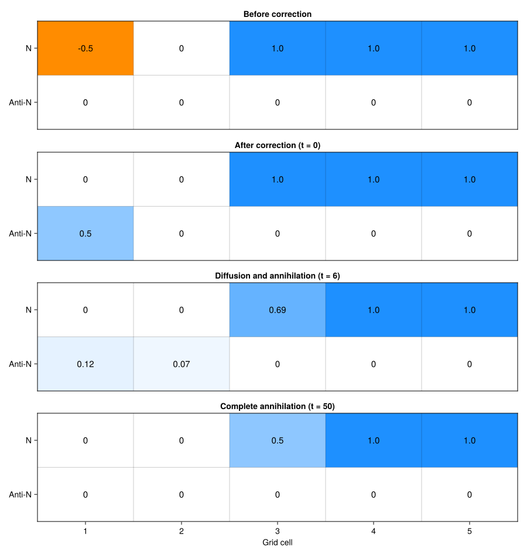

Positivity Preservation
It is common in BGC models to behave badly if any tracers go bellow zero, analytically this is fine because they (usually) can not get below zero, and it is unphysical for the concentration of something to be negative. Issues arise when the inaccuracy in numerical integration making some tracer become negative, usually leading to explosions (e.g. $\exp(-C) \to \inf$), or bounds errors (e.g. $\log(C)$). Essentially this occurs when the local error in the numerical scheme is sufficiently large that more than the available amount of tracer is consumed.
There exists a set of numerical schemes which overcome this and guarantee positivity (provided a positivity preserving advection scheme and well-behaved diffusion scheme are used) but are complex to implement. Although we may do this in the future we have not yet done so in the meantime have provided some utilities which maintain positivity. OceanBioME.jl provides three modifiers for correcting negative tracer concentrations, described below.
See Utilities for usage.
ClipNegativeTracers
ClipNegativeTracers sets negative concentrations to zero without redistributing the difference, increasing the affected tracer inventories.
ScaleNegativeTracers
For a single conservation group, ScaleNegativeTracers sets negative concentrations to zero and multiplies positive concentrations by $t/p$, where $t$ is the original weighted total and $p$ is the weighted total of positive concentrations. A negative group total cannot be preserved using only nonnegative concentrations.
Tracers may belong to multiple conservation groups, such as nitrogen and carbon. These groups must be passed to the same ScaleNegativeTracers modifier: separate modifiers act sequentially and may change totals preserved by earlier corrections. Each group needs at least one tracer that is not shared with another group.
AntiNegativeTracers
AntiNegativeTracers sets negative tracer concentrations to zero while conserving elemental inventories. Each selected conservation group (e.g. nitrogen or carbon) receives one additional anti-tracer. Its value is nonnegative and represents the remaining deficit after annihilation. Anti-tracers can be transported between grid cells, allowing annihilation wherever the selected tracer is available.
One nutrient and its anti-tracer
For a single nutrient tracer $T$ (e.g. $N$) and its anti-tracer $A \geq 0$, both in the same nutrient units, the correction in each grid cell is
\[\begin{aligned} \widetilde{T} &= \max(T - A, 0), \\ \widetilde{A} &= \max(A - T, 0). \end{aligned}\]
$T$ and $A$ are the values before correction; tildes denote the values after correction, including annihilation. The combined inventory is conserved:
\[T - A = \widetilde{T} - \widetilde{A}.\]
If $A = 0$ before correction, this simplifies to
\[T = \widetilde{T} - \widetilde{A}.\]
For example, a negative tracer concentration with $T = -0.5$ and $A = 0$ gives
\[\begin{aligned} \widetilde{T} &= 0, \\ \widetilde{A} &= 0.5. \end{aligned}\]
Conversely, for $T = 1$ and $A = 0.2$, annihilation gives
\[\begin{aligned} \widetilde{T} &= 0.8, \\ \widetilde{A} &= 0. \end{aligned}\]
Multiple tracers and conservation groups
The same correction applies when several tracers contribute to a conserved quantity, such as nitrogen or carbon. For each conservation group $g$, define:
- $T_g^{\mathrm{ann}}$: the existing tracer selected for annihilation in group $g$, such as $N$ for nitrogen or $DIC$ for carbon.
- $\alpha_g^{\mathrm{ann}} > 0$: the stoichiometric weight of that selected tracer in group $g$.
- $T_i$: the concentrations of the other tracers in the group. The index $i$ runs over these tracers only; it excludes $T_g^{\mathrm{ann}}$.
- $a_{gi} \geq 0$: the stoichiometric weight of each of those other tracers in group $g$.
- $A_g \geq 0$: the anti-tracer value for group $g$, expressed in the same units as $T_g^{\mathrm{ann}}$.
For example, if the nitrogen group contains $N$, $P$, and $Z$, we can choose $T_{\mathrm{N}}^{\mathrm{ann}} = N$. The sum over $i$ then contains only $P$ and $Z$. For a carbon group, we might instead choose $T_{\mathrm{C}}^{\mathrm{ann}} = \mathrm{DIC}$. Tracers such as $P$ and $Z$ can contribute to both groups, with different stoichiometric weights; each selected annihilation tracer must belong exclusively to its group. The selection is configured using annihilation_tracers.
First, subtract the anti-tracer value from the selected tracer and account for the negative contributions of the other tracers:
\[q_g = T_g^{\mathrm{ann}} - A_g + \sum_i \frac{a_{gi}}{\alpha_g^{\mathrm{ann}}}\min(T_i, 0).\]
The sum includes only the other tracers, because the selected tracer is already included as $T_g^{\mathrm{ann}}$. Each $\min(T_i, 0)$ contributes only if that tracer is negative. The ratio $a_{gi} / \alpha_g^{\mathrm{ann}}$ converts its contribution into the units of the tracer selected for annihilation, which are also the units of $A_g$.
The corrected values are
\[\begin{aligned} \widetilde{T}_g^{\mathrm{ann}} &= \max(q_g, 0), \\ \widetilde{T}_i &= \max(T_i, 0), \qquad \text{for each other tracer }i, \\ \widetilde{A}_g &= \max(-q_g, 0). \end{aligned}\]
As in the single-nutrient case, a tilde denotes the value after the complete correction, including annihilation. When $q_g \geq 0$, the anti-tracer is fully annihilated; otherwise, the remaining deficit is retained as a positive $\widetilde{A}_g$.
For each group, the correction conserves its weighted inventory within each grid cell. The stoichiometric weight $\alpha_g^{\mathrm{ann}}$ multiplies both the selected tracer and the anti-tracer because they share the same units; the anti-tracer is subtracted because its value represents a deficit:
\[\begin{aligned} &\alpha_g^{\mathrm{ann}}(T_g^{\mathrm{ann}} - A_g) + \sum_i a_{gi}T_i \\ &\qquad = \alpha_g^{\mathrm{ann}}(\widetilde{T}_g^{\mathrm{ann}} - \widetilde{A}_g) + \sum_i a_{gi}\widetilde{T}_i. \end{aligned}\]
The anti-tracers are ordinary Oceananigans tracers with zero biological tendencies. Oceananigans handles their transport and boundary conditions. The following example uses tracer-specific diffusion to illustrate anti-tracer transport: diffusion of the original nutrient tracer is disabled, while the anti-tracer diffuses between grid cells. Both tracers can undergo advection and diffusion in general simulations. The simple abiotic configuration isolates the correction from biological production and consumption.
using OceanBioME, Oceananigans, CairoMakie
using Oceananigans.TimeSteppers: update_state!
grid = RectilinearGrid(size = 5, x = (0, 5), topology = (Bounded, Flat, Flat))
base = NPZD(grid; plankton = Abiotic(), detritus = InstantRemineralisationDetritus(),
light_attenuation = nothing)
modifier = AntiNegativeTracers(base.underlying_biogeochemistry;
annihilation_tracers = (nitrogen = :N,))
bgc = Biogeochemistry(base.underlying_biogeochemistry; modifiers = modifier)
closure = HorizontalScalarDiffusivity(ν = 0, κ = (N = 0, nitrogen_anti_tracer = 0.5))
model = NonhydrostaticModel(grid; biogeochemistry = bgc, closure,
momentum_advection = nothing,
tracer_advection = (N = Centered(), nitrogen_anti_tracer = nothing))
# Negative N initially occupies cell 1; cell 2 has no N; cells 3+ have N.
set!(model.tracers.N, x -> x < 1 ? -0.5 : x < 2 ? 0.0 : 1.0)
set!(model.tracers.nitrogen_anti_tracer, 0)
snapshot() = (vec(Array(interior(model.tracers.N))),
vec(Array(interior(model.tracers.nitrogen_anti_tracer))))
before = snapshot()
update_state!(model) # N becomes nonnegative; the negative value is stored in Anti-N.
initial = snapshot()
simulation = Simulation(model; Δt = 0.1, stop_iteration = 60)
run!(simulation)
at_6 = snapshot()
simulation.stop_iteration = 500
run!(simulation)
final = snapshot()
nothing[ Info: Initializing simulation...
[ Info: ... simulation initialization complete (69.108 ms)
[ Info: Executing initial time step...
[ Info: ... initial time step complete (910.648 ms).
[ Info: Simulation is stopping after running for 980.361 ms.
[ Info: Model iteration 60 equals or exceeds stop iteration 60.
[ Info: Initializing simulation...
[ Info: ... simulation initialization complete (4.192 μs)
[ Info: Executing initial time step...
[ Info: ... initial time step complete (19.044 μs).
[ Info: Simulation is stopping after running for 1.716 ms.
[ Info: Model iteration 500 equals or exceeds stop iteration 500.The saved concentrations are plotted before correction, immediately after correction, and at two subsequent times.
stages = (("Before correction", before),
("After correction (t = 0)", initial),
("Diffusion and annihilation (t = 6)", at_6),
("Complete annihilation (t = 50)", final))
fig = Figure(size = (900, 950))
colormap = cgrad([:darkorange, :white, :dodgerblue], [0, 1/3, 1])
for (stage, (title, (N, A))) in enumerate(stages)
ax = Axis(fig[stage, 1]; title, yticks = ([1, 2], ["Anti-N", "N"]),
xticks = 1:5, xlabel = "Grid cell", limits = (0.5, 5.5, 0.5, 2.5),
xgridvisible = false, ygridvisible = false)
values = hcat(A, N) # Anti-N below N.
heatmap!(ax, 1:5, 1:2, values; colormap, colorrange = (-0.5, 1.0))
for j in 1:2, i in 1:5
value = round(values[i, j]; digits = 2)
text!(ax, iszero(value) ? "0" : string(value);
position = (i, j), align = (:center, :center), color = :black, fontsize = 15)
end
vlines!(ax, 1.5:4.5; color = (:black, 0.2), linewidth = 1)
hlines!(ax, [1.5]; color = (:black, 0.2), linewidth = 1)
stage < 4 && hidexdecorations!(ax)
end
fig
The first stage shows the prescribed negative N concentration in cell 1, with Anti-N initially zero. The correction sets N to zero there and stores the deficit as a positive Anti-N value. Over time, Anti-N diffuses through cells without N; where N is available, annihilation reduces its concentration. By $t = 50$, almost all Anti-N has been annihilated. N itself does not diffuse in this example. The figure shows all five grid cells. The combined inventory remains constant under the no-flux boundaries. This example uses an explicit diffusion coefficient $\kappa = 0.5$ and time step $\Delta t = 0.1$ on a grid with $\Delta x = 1$; larger diffusivities require correspondingly smaller explicit time steps. In a three-dimensional model, supply the desired tracer-specific advection and diffusivities for all tracers when constructing the Oceananigans model.
Conservation groups and annihilation
Each conservation group requires a tracer selected for annihilation that belongs exclusively to that group. Tracers shared by multiple conservation groups are corrected consistently.
When constructed from a biogeochemical model, AntiNegativeTracers selects conservation groups with nonnegative stoichiometric weights. Groups with negative weights (such as some oxygen groups) are excluded, while tracers absent from the model's conserved_tracers groups retain their original treatment. Conservation is guaranteed for the selected groups, including their anti-tracer values.